← 返回阅读库 · 原论文目录
论文讲解阅读文档 · 生成对抗网络GAN · v146
人像自拍秒变爆款动漫画风【OpenMMLab】
视频时长 00:28:03；讲解文字 8,361 字符；提取讲解画面 300 张。按视频原顺序阅读，每段文字保留时间戳。
文字来自整段视频的自动语音转写，按自然停顿分段，并与 PPT / 论文页面 / 演示画面对齐。未将讲解压缩为摘要；术语、数字和口述公式请结合画面及原论文核对。 阅读稿已校正规范部分明确术语误识别；原始逐字稿和每处修改记录另行保留。
讲解画面为源视频截图（640×360），不是可编辑 PPT 文件。全片按每秒 2 帧扫描内容变化，逐步展开页保留；连续动画保留代表画面。清晰度受源视频限制。
下载完整资料包 · 含离线 HTML、PDF、Word、全部 PPT 画面和字幕。
原论文与材料
AgileGAN: Stylizing Portraits by Inversion-Consistent Transfer Learning · 下载完整 PDF（13 页）
MMGEN-FaceStylor 官方实现与说明 · 官方资料
讲解所用工具代码，基于 AgileGAN 的流程并结合其他实现。
按时间阅读
00:00:00–00:00:15 · 画面 001
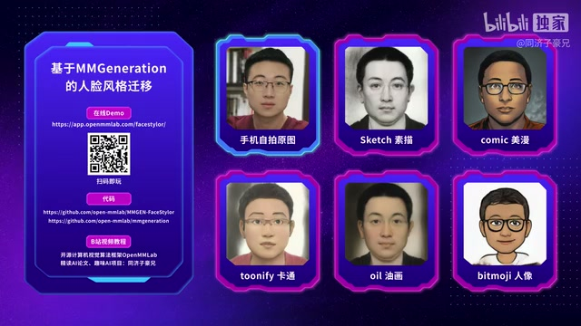
00:00:00–00:00:15 · 画面 001大家好，我是同济子豪兄。今天讲一个既惊艳又有趣还非常黑科技的人工智能应用，人像转动漫画风。可以先打开我们做的在线 demo 体验一下，就是左边这个二维码，你也可以点击上面的链接访问。上传一张你自己的照片，选择风格，比如卡通、油画、素描、简笔画、美漫，点击 submit 提交按钮。
00:00:15–00:00:45 · 画面 002
00:00:15–00:00:45 · 画面 002等 10 秒钟之后你的手机自拍就秒变爆款动漫头像了。可以玩一整天那这一期视频就是带领大家进入图像生成领域。用代码实现这个案例。最后理解背后的生成对抗网络算法原理。我会手把手教大家如何下载安装配置。
00:00:45–00:01:01 · 画面 003
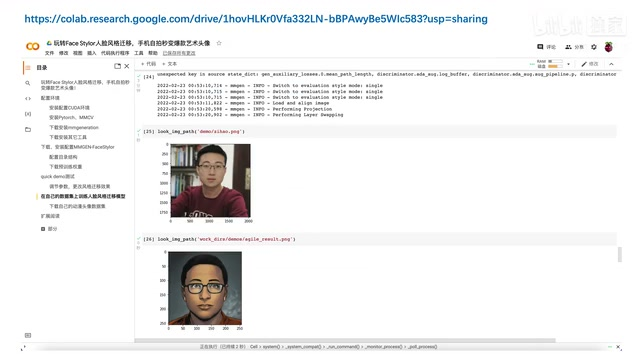
00:00:45–00:01:01 · 画面 003调用预训练的风格迁移模型进行风格迁移。进而你可以构建一个你自己的动漫人像数据集。在你自己的数据集上训练自己的风格迁移生成算法。比如说，如果你喜欢迪士尼的动画，
00:01:01–00:01:05 · 画面 004
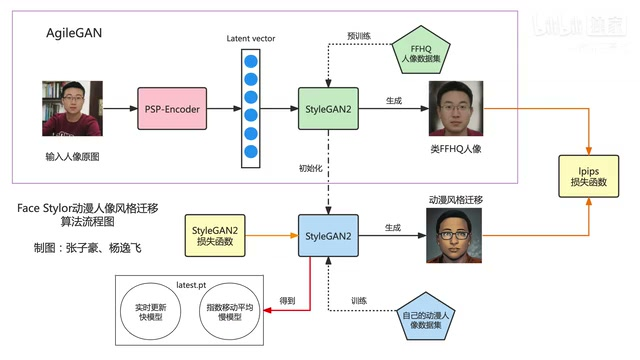
00:01:01–00:01:05 · 画面 004就可以做一个迪士尼公主的人像数据集。
00:01:05–00:01:27 · 画面 005
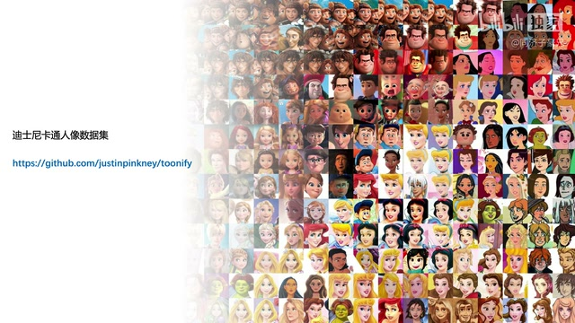
00:01:05–00:01:27 · 画面 005训练一个迪士尼公主的风格迁移模型。把任何一张人像照片转成迪士尼公主的画风。如果你喜欢二次元或者原神，就可以把你喜欢的动漫或者游戏人物的头像。截图下来做成数据集。然后训练出自己的风格迁移模型。我这里提供了几个开源的数据集。
00:01:27–00:01:29 · 画面 006
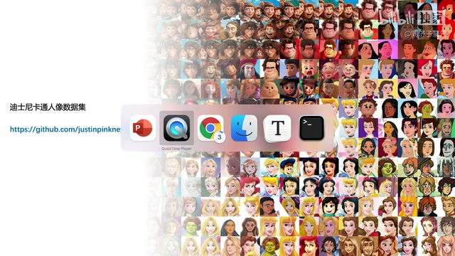
00:01:27–00:01:29 · 画面 00600:01:29–00:01:33 · 画面 007
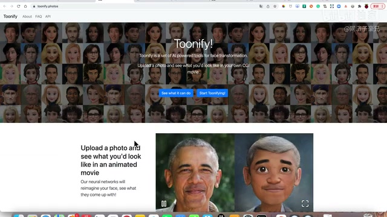
00:01:29–00:01:33 · 画面 007比如说 Toonify这是一个卡通的一个数据集。
00:01:33–00:01:37 · 画面 008
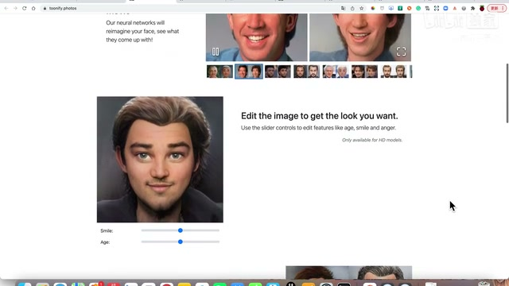
00:01:33–00:01:37 · 画面 008并且它也有预训练的代码和模型。你可以改变一个人物的表情。
00:01:37–00:01:41 · 画面 009
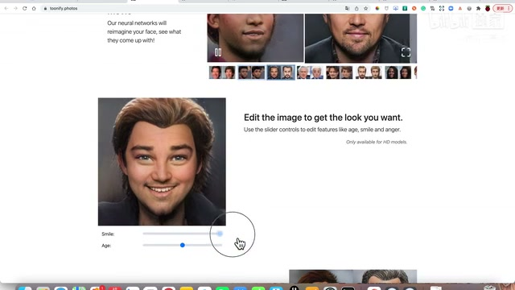
00:01:37–00:01:41 · 画面 009甚至他的年龄
00:01:41–00:01:45 · 画面 010
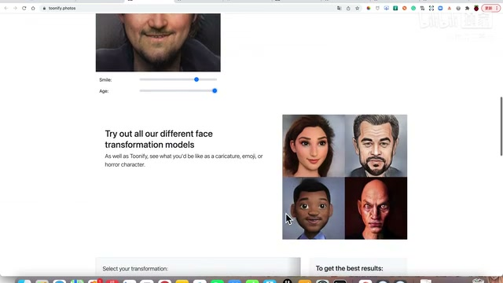
00:01:41–00:01:45 · 画面 010那这就是日本的浮世绘数据集。
00:01:45–00:01:47 · 画面 011
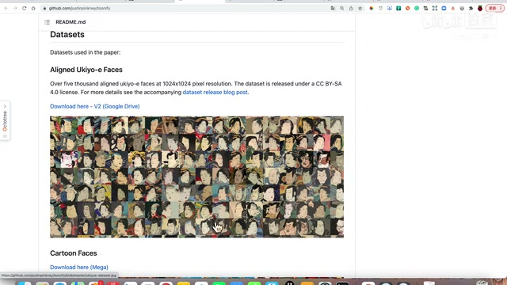
00:01:45–00:01:47 · 画面 011还有迪士尼的卡通人物数据集。
00:01:47–00:01:51 · 画面 012
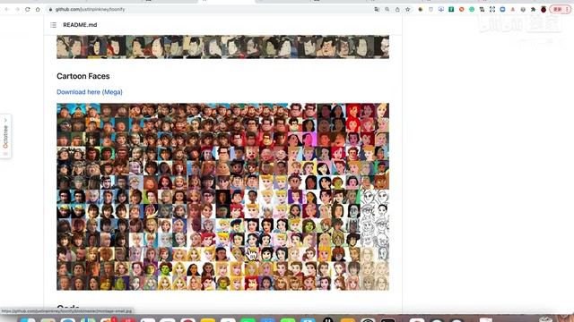
00:01:47–00:01:51 · 画面 012它也有一个自己带的 Collab 代码。
00:01:51–00:01:53 · 画面 013
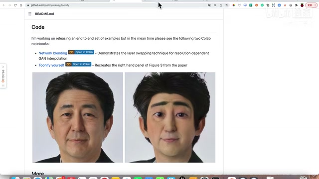
00:01:51–00:01:53 · 画面 013在 Kaggle 上我也找到一个高。
00:01:53–00:01:57 · 画面 014
00:01:53–00:01:57 · 画面 014分辨率的卡通人物图像的数据集。
00:01:57–00:02:00 · 画面 015
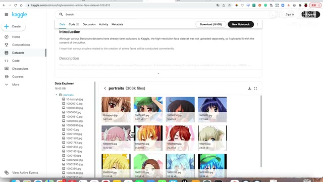
00:01:57–00:02:00 · 画面 015刚刚提到的服事会其实是有两个数据集，一个数据集是只有服事会的人物，还有一个数据集是分开了人物的种类，有各种各样的角色，这个数据集就是分角色的服事会数据集。
00:02:00–00:02:03 · 画面 016
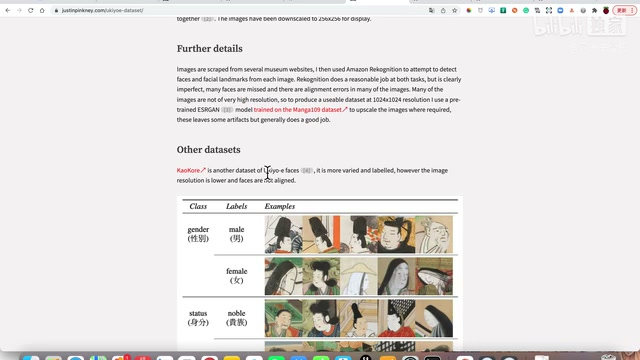
00:02:00–00:02:03 · 画面 01600:02:03–00:02:04 · 画面 017
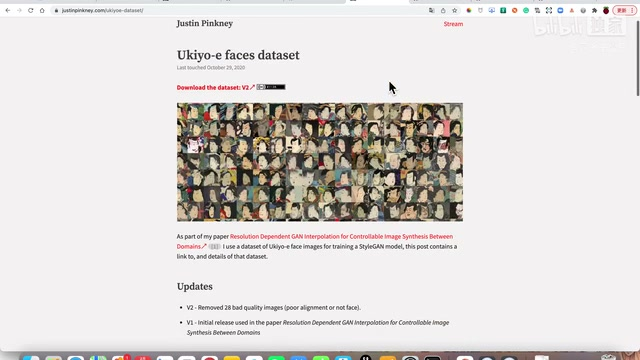
00:02:03–00:02:04 · 画面 01700:02:04–00:02:08 · 画面 018
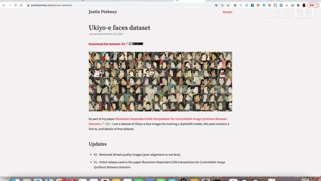
00:02:04–00:02:08 · 画面 01800:02:08–00:02:10 · 画面 019
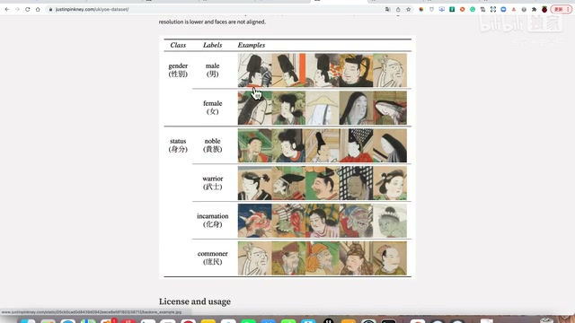
00:02:08–00:02:10 · 画面 01900:02:10–00:02:11 · 画面 020
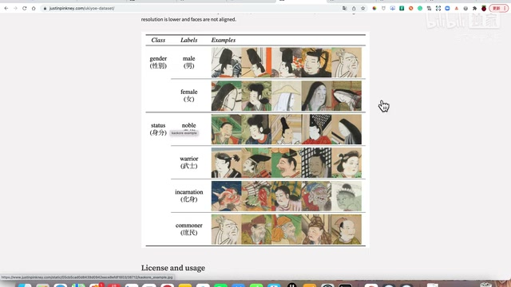
00:02:10–00:02:11 · 画面 02000:02:11–00:02:13 · 画面 021
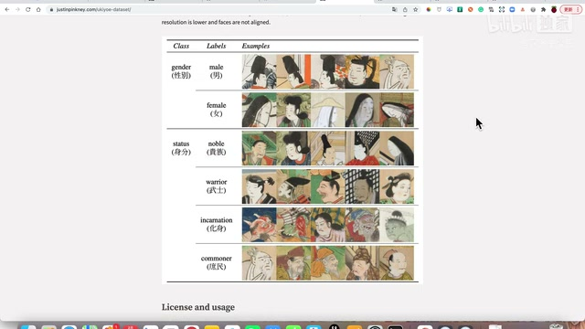
00:02:11–00:02:13 · 画面 02100:02:13–00:02:17 · 画面 022
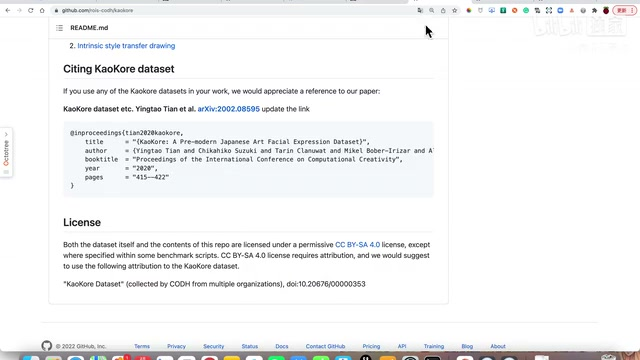
00:02:13–00:02:17 · 画面 02200:02:17–00:02:19 · 画面 023
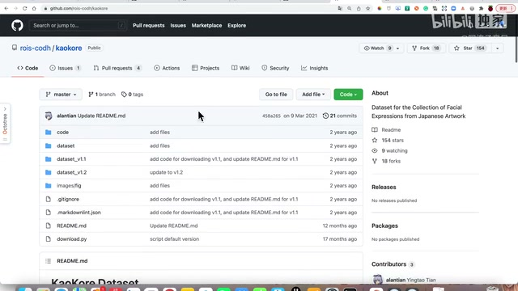
00:02:17–00:02:19 · 画面 02300:02:19–00:02:23 · 画面 024
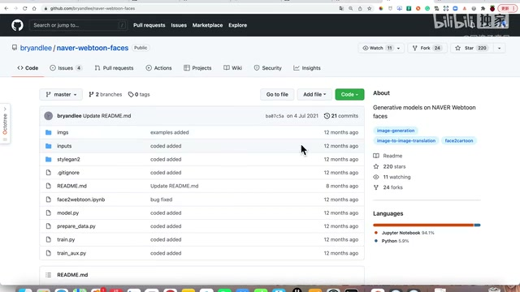
00:02:19–00:02:23 · 画面 024还有一个在 GitHub 上开源的是韩国动漫数据集，这个数据集效果是非常好的，你可以点击 Dataset 旁边的 link 来下载它，还提供了一系列各种各样的参数来控制生成的效果，你可以自己下来玩一玩，这些数据集支持很多很多的韩国动漫，你都可以按照这个脚本来下载。
00:02:23–00:02:26 · 画面 025
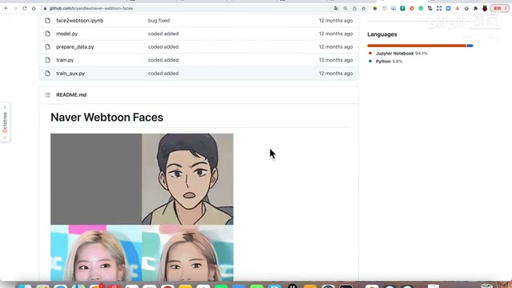
00:02:23–00:02:26 · 画面 02500:02:26–00:02:27 · 画面 026
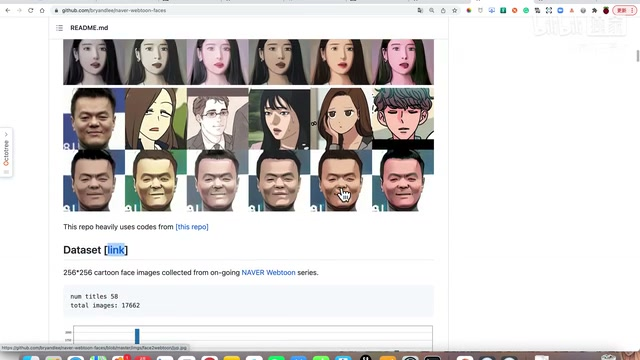
00:02:26–00:02:27 · 画面 02600:02:27–00:02:31 · 画面 027
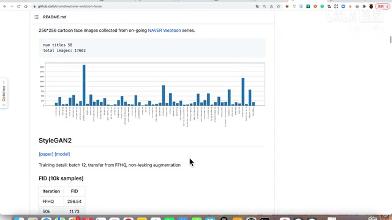
00:02:27–00:02:31 · 画面 02700:02:31–00:02:35 · 画面 028
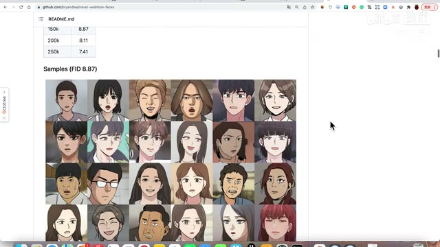
00:02:31–00:02:35 · 画面 02800:02:35–00:02:36 · 画面 029
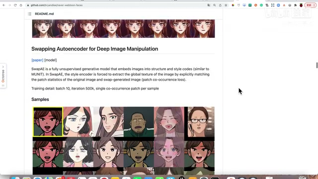
00:02:35–00:02:36 · 画面 02900:02:36–00:02:40 · 画面 030
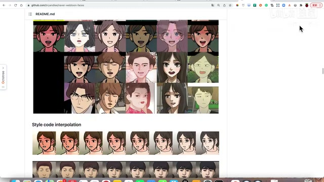
00:02:36–00:02:40 · 画面 03000:02:40–00:02:44 · 画面 031
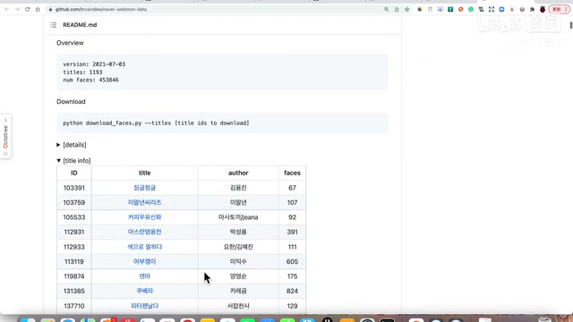
00:02:40–00:02:44 · 画面 03100:02:44–00:02:48 · 画面 032
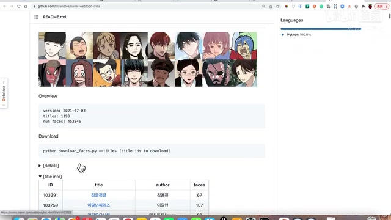
00:02:44–00:02:48 · 画面 032比如说，你想下载这一部动漫的数据集，你就在 titles 参数指定它的 ID 是 103391 就可以了，还是回到我们的 PPT，其实很多短视频和美图 APP 里都有风格迁移的功能，比如抖音、B612、醒图、醒就是清醒的醒，左边这个效果就是用 B612 做的，右边是用醒图做的。
00:02:48–00:02:52 · 画面 033
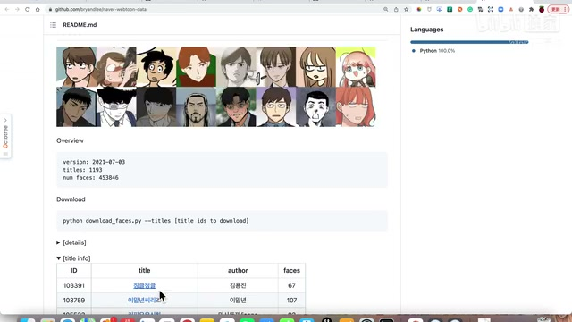
00:02:48–00:02:52 · 画面 03300:02:52–00:02:56 · 画面 034
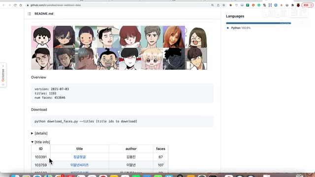
00:02:52–00:02:56 · 画面 03400:02:56–00:02:59 · 画面 035
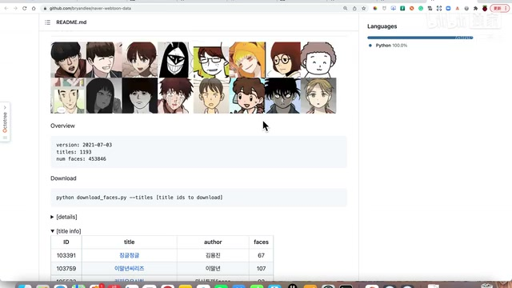
00:02:56–00:02:59 · 画面 03500:02:59–00:03:00 · 画面 036
00:02:59–00:03:00 · 画面 03600:03:00–00:03:32 · 画面 037
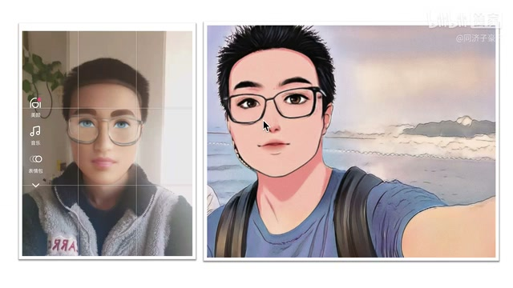
00:03:00–00:03:32 · 画面 037用人工智能增强现实区块链或者 NFT 来做艺术创作和数字艺术是近几年非常重要的潮流有人说这是元宇宙有人说这是 web3.0其实阳光下并没有新鲜事，早在人工智能和深度学习爆发的前期，就是 2014 年左右，就已经有了很多人工智能做艺术创作类似的工作，比如说之前的视频我们就讲过世界名画风格迁移，把一张照片变成梵高的星空画风，变成日本的浮世绘画风，变成毕加索的抽象画画风。
00:03:32–00:04:07 · 画面 038
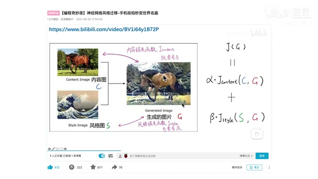
00:03:32–00:04:07 · 画面 038在这个视频中我详细讲解了它背后的数学和算法原理，并且有代码实现，可以出门左转看一看，那到后来呢，图像生成干脆直接变成了计算机视觉的一个重要领域，那其中的重要算法就是生成对抗网络。
00:04:07–00:04:29 · 画面 039
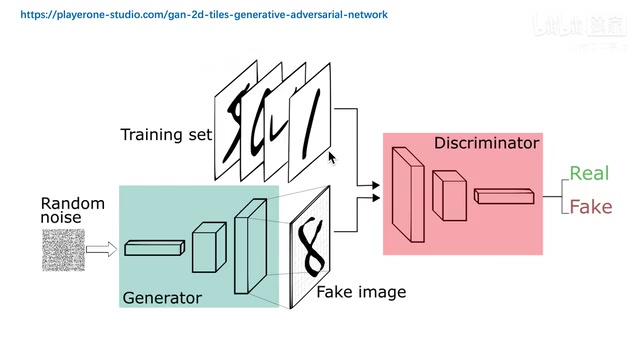
00:04:07–00:04:29 · 画面 039也叫做 GAN 干网络，你只需要给干网络为海量的图像，它就能够生成出以假乱真能骗过人眼而且并没有在原始数据集中出现过的假图像，干网络包含两个模型，一个生成器，一个判别器。
00:04:29–00:05:16 · 画面 040
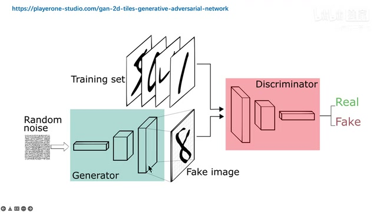
00:04:29–00:05:16 · 画面 040那生成器呢它在努力生成能够骗过判别器的假图像而判别器呢则努力识破生成器生成的假图像区分真假图像所以生成器呢就像造假币的罪犯判别器呢就像抓假币的警察他们两个就像猎豹和羚羊一样协同进化也像两个超级大国之间军备竞赛也可以说是像射雕英雄传里边周伯通左右手互搏最终他俩一起训练协同进化达到博弈论中的纳什均衡这个时候训练完成我们直接扔掉判别器直接用生成器生成的图像就能够以假乱真了举个例子这是谷歌 2018 年时候发布的 BigGAN 大 GAN 网络
00:05:16–00:05:41 · 画面 041
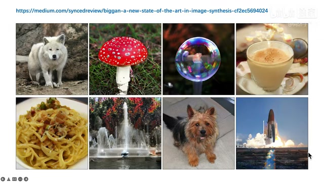
00:05:16–00:05:41 · 画面 041这是他生成的图像啊非常的逼真这些图像都不是现实生活中存在的他们都是假图像我记得非常清楚啊当时谷歌发布逼个干的时候我还在读研一这个这些图给当时读土木工程的我非常大的震撼还有一个算法叫 pix2pix 是干网络的一种可以根据你随手画的简笔画生成对应的真实图像简笔画的斜
00:05:41–00:05:51 · 画面 042
00:05:41–00:05:51 · 画面 042变成针鞋简笔画的猫变成针猫简笔画的手提包变成针手提包还有建筑外立面的自动生成你只需要指定哪块是墙哪块是门哪块是窗户它就能够根据你设计的这个草图画出一个以假乱真的真实建筑的图像就叫 pix to pix 也叫做 image to image
00:05:51–00:06:12 · 画面 043
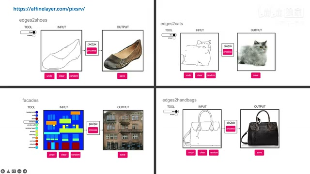
00:05:51–00:06:12 · 画面 04300:06:12–00:06:20 · 画面 044
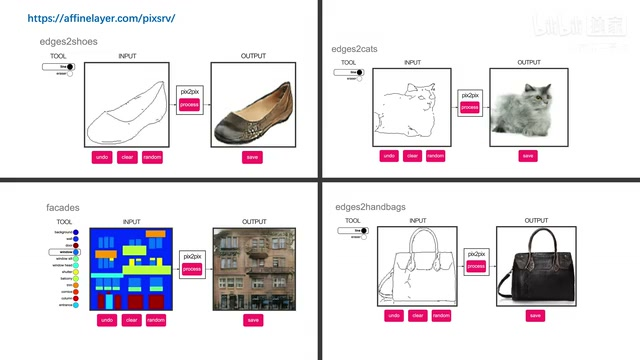
00:06:12–00:06:20 · 画面 044这个领域其实发展非常迅速发论文也很内卷比如说同济大学建筑学院很多同学就是用 GAN 来做建筑设计和城市规划的上面这个链接是同济 FabUnion 课题组写的一篇很不错的综述
00:06:20–00:06:22 · 画面 045
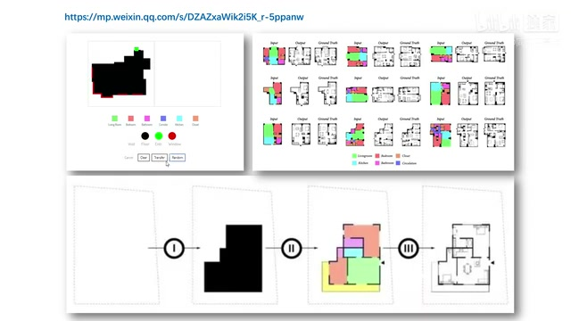
00:06:20–00:06:22 · 画面 04500:06:22–00:06:24 · 画面 046
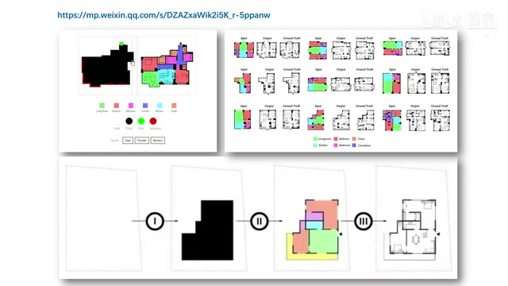
00:06:22–00:06:24 · 画面 04600:06:24–00:06:25 · 画面 047
00:06:24–00:06:25 · 画面 04700:06:25–00:06:26 · 画面 048
00:06:25–00:06:26 · 画面 04800:06:26–00:06:27 · 画面 049
00:06:26–00:06:27 · 画面 04900:06:27–00:06:29 · 画面 050
00:06:27–00:06:29 · 画面 05000:06:29–00:06:30 · 画面 051
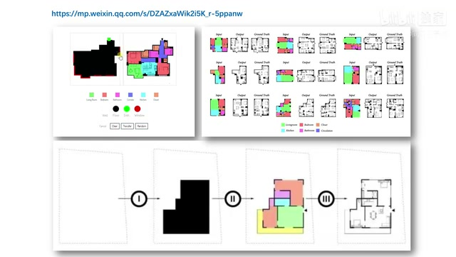
00:06:29–00:06:30 · 画面 05100:06:30–00:06:31 · 画面 052
00:06:30–00:06:31 · 画面 05200:06:31–00:06:32 · 画面 053
00:06:31–00:06:32 · 画面 05300:06:32–00:06:34 · 画面 054
00:06:32–00:06:34 · 画面 05400:06:34–00:06:35 · 画面 055
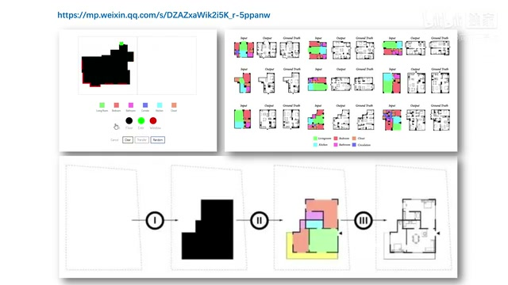
00:06:34–00:06:35 · 画面 055展示的这个图呢是哈佛大学发布的 Archigan 给出房间的形状就可以直接把各个房间的平面图和布局甚至家具的位置都设计出来将来这个人工智能能够把设计都替代了
00:06:35–00:06:37 · 画面 056
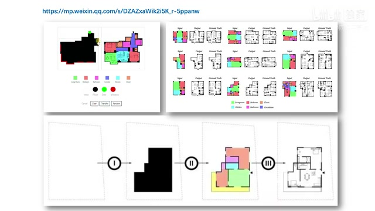
00:06:35–00:06:37 · 画面 05600:06:37–00:06:39 · 画面 057
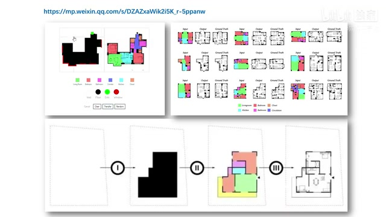
00:06:37–00:06:39 · 画面 05700:06:39–00:06:40 · 画面 058
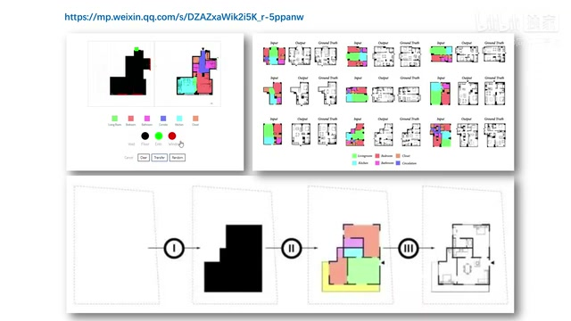
00:06:39–00:06:40 · 画面 05800:06:40–00:06:42 · 画面 059
00:06:40–00:06:42 · 画面 05900:06:42–00:06:44 · 画面 060
00:06:42–00:06:44 · 画面 06000:06:44–00:06:45 · 画面 061
00:06:44–00:06:45 · 画面 06100:06:45–00:06:46 · 画面 062
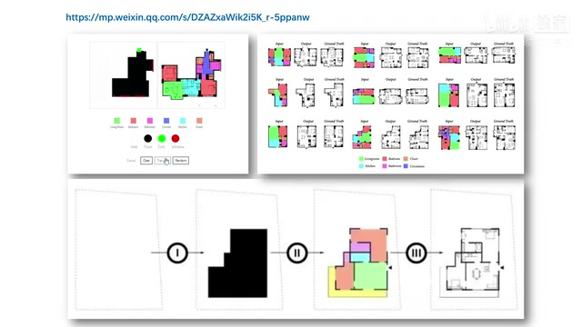
00:06:45–00:06:46 · 画面 06200:06:46–00:06:47 · 画面 063
00:06:46–00:06:47 · 画面 06300:06:47–00:06:49 · 画面 064
00:06:47–00:06:49 · 画面 06400:06:49–00:06:50 · 画面 065
00:06:49–00:06:50 · 画面 06500:06:50–00:06:51 · 画面 066
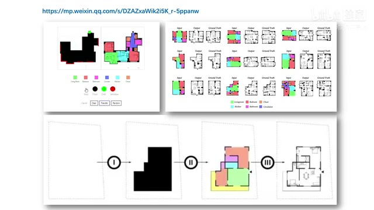
00:06:50–00:06:51 · 画面 06600:06:51–00:07:10 · 画面 067
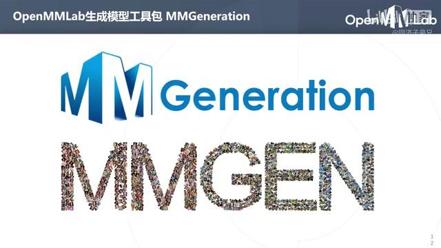
00:06:51–00:07:10 · 画面 067那既然这个生成对抗网络干网络这么好玩这么牛我们普通的初学者能不能玩一把呢给大家推荐我们 OpenMM Lab 团队开源的图像生成工具箱 MM Generation 刚刚的在线 demo 和一会儿要用到的代码都是基于 MM Generation 实现的它们都在 GitHub 上完全开源你可以免费的下载使用和修改所有的源代码
00:07:10–00:07:14 · 画面 068
00:07:10–00:07:14 · 画面 06800:07:14–00:07:18 · 画面 069
00:07:14–00:07:18 · 画面 06900:07:18–00:07:22 · 画面 070
00:07:18–00:07:22 · 画面 070用 MM Generation 你可以用别人做好的干模型直接生成图像也可以训练自己的干网络那我马上还会发布一期专门的 MM Generation 代码实战教程比如说如何做出假的建筑图像如何做出假的哈士奇的图像那今天呢还是先讲人像风格迁移项目
00:07:22–00:07:26 · 画面 071
00:07:22–00:07:26 · 画面 07100:07:26–00:07:30 · 画面 072
00:07:26–00:07:30 · 画面 07200:07:30–00:07:34 · 画面 073
00:07:30–00:07:34 · 画面 07300:07:34–00:07:35 · 画面 074
00:07:34–00:07:35 · 画面 07400:07:35–00:07:44 · 画面 075
00:07:35–00:07:44 · 画面 07500:07:44–00:07:50 · 画面 076
00:07:44–00:07:50 · 画面 076打开这个 Collab 链接就可以直接编辑和运行代码了谷歌的 Collab 和 Jupyter Notebook 的基本操作是一样的选中代码块直接 Shift 加回车就可以逐代码块运行这个代码分为三部分第一部分是安装配置环境
00:07:50–00:07:55 · 画面 077
00:07:50–00:07:55 · 画面 07700:07:55–00:07:56 · 画面 078
00:07:55–00:07:56 · 画面 07800:07:56–00:08:03 · 画面 079
00:07:56–00:08:03 · 画面 07900:08:03–00:08:04 · 画面 080
00:08:03–00:08:04 · 画面 08000:08:04–00:08:14 · 画面 081
00:08:04–00:08:14 · 画面 081下载安装 OpenMMLab 的几个算法库比如 MMCV 和 MMGeneration 还有我们今天要用到的 FaceStylor 第二部分是调用已经训练好的六个动漫风格迁移模型对人像图片进行风格迁移第三部分是构建我们自己的动漫人像数据集训练出自己专属的动漫风格迁移模型并且测试最终结果
00:08:14–00:08:15 · 画面 082
00:08:14–00:08:15 · 画面 08200:08:15–00:08:20 · 画面 083
00:08:15–00:08:20 · 画面 08300:08:20–00:08:21 · 画面 084
00:08:20–00:08:21 · 画面 08400:08:21–00:08:39 · 画面 085
00:08:21–00:08:39 · 画面 085那因为这个案例呢可以直接做成一个毕业设计所以在讲完这个代码之后我还会再大概讲讲背后的算法原理那我还放了大量的数据集参考论文和扩展链接那从头来看代码
00:08:39–00:08:41 · 画面 086
00:08:39–00:08:41 · 画面 08600:08:41–00:08:44 · 画面 087
00:08:41–00:08:44 · 画面 08700:08:44–00:08:47 · 画面 088
00:08:44–00:08:47 · 画面 08800:08:47–00:08:48 · 画面 089
00:08:47–00:08:48 · 画面 089首先是配置 CUDA 环境，用 Colab 的好处之一就是可以薅谷歌的羊毛，GPU 羊毛，而且 Colab 内置了多个 CUDA 环境，不需要你自己从头配置，省去了 N 多烦人的步骤。Colab 默认的 CUDA 版本是 11.1，在我们这个案例中其实只要用 10.1，所以这里要用软链接来替换一下，直接运行即可，非常简单，看不懂也没关系。
00:08:48–00:08:49 · 画面 090
00:08:48–00:08:49 · 画面 09000:08:49–00:08:52 · 画面 091
00:08:49–00:08:52 · 画面 09100:08:52–00:09:10 · 画面 092
00:08:52–00:09:10 · 画面 09200:09:10–00:09:11 · 画面 093
00:09:10–00:09:11 · 画面 09300:09:11–00:09:15 · 画面 094
00:09:11–00:09:15 · 画面 09400:09:15–00:09:16 · 画面 095
00:09:15–00:09:16 · 画面 095直接运行然后是安装 PyTorch、MMCV 还有几个依赖工具包都直接运行就可以了非常的简单从 GitHub 上面下载 MM Generation 和 FaceStylor 的最新版并且安装对应的依赖工具包这是 MM Generation 的这是 FaceStylor 的都是直接运行就可以了
00:09:16–00:09:17 · 画面 096
00:09:16–00:09:17 · 画面 09600:09:17–00:09:19 · 画面 097
00:09:17–00:09:19 · 画面 09700:09:19–00:09:21 · 画面 098
00:09:19–00:09:21 · 画面 09800:09:21–00:09:24 · 画面 099
00:09:21–00:09:24 · 画面 09900:09:24–00:09:28 · 画面 100
00:09:24–00:09:28 · 画面 10000:09:28–00:09:29 · 画面 101
00:09:28–00:09:29 · 画面 10100:09:29–00:09:32 · 画面 102
00:09:29–00:09:32 · 画面 10200:09:32–00:09:35 · 画面 103
00:09:32–00:09:35 · 画面 10300:09:35–00:09:37 · 画面 104
00:09:35–00:09:37 · 画面 10400:09:37–00:09:39 · 画面 105
00:09:37–00:09:39 · 画面 10500:09:39–00:09:43 · 画面 106
00:09:39–00:09:43 · 画面 10600:09:43–00:09:45 · 画面 107
00:09:43–00:09:45 · 画面 107那下载好之后来配置一下 FaceDialer 的目录创建几个新的文件夹这个 Data 目录是下载人脸关键点检测模型的在这里就下载了然后 Work Directories 一会儿用来存放预训练模型和训练自己模型的中间结果
00:09:45–00:09:54 · 画面 108
00:09:45–00:09:54 · 画面 10800:09:54–00:09:56 · 画面 109
00:09:54–00:09:56 · 画面 10900:09:56–00:09:57 · 画面 110
00:09:56–00:09:57 · 画面 11000:09:57–00:10:04 · 画面 111
00:09:57–00:10:04 · 画面 11100:10:04–00:10:10 · 画面 112
00:10:04–00:10:10 · 画面 112然后 print train 是存放预训练模型 experiments 是存放我们自己训练的中间结果然后下载预训练权重先在 data 目录下下载这个人脸关键点检测的模型
00:10:10–00:10:12 · 画面 113
00:10:10–00:10:12 · 画面 11300:10:12–00:10:17 · 画面 114
00:10:12–00:10:17 · 画面 11400:10:17–00:10:20 · 画面 115
00:10:17–00:10:20 · 画面 115然后呢，在 pretrain 的目录下下载风格迁移的预训练模型，建议呢，你把这八个你把这八个都下载下来，网速好的话大概只需要两三分钟，其实就包含了简笔画、美漫、油画、bitmoji 这些风格的预训练模型，之后呢返回 face styler 的主目录
00:10:20–00:10:25 · 画面 116
00:10:20–00:10:25 · 画面 11600:10:25–00:10:26 · 画面 117
00:10:25–00:10:26 · 画面 11700:10:26–00:10:39 · 画面 118
00:10:26–00:10:39 · 画面 11800:10:39–00:10:42 · 画面 119
00:10:39–00:10:42 · 画面 11900:10:42–00:10:46 · 画面 120
00:10:42–00:10:46 · 画面 120看一下吧，运行之后就会产生这么两个文件夹，那我们主要是在 FaceStylor 里边有一个 work directories 目录，pre-trained 这就是下载好的所有的预训练权重
00:10:46–00:10:47 · 画面 121
00:10:46–00:10:47 · 画面 12100:10:47–00:10:51 · 画面 122
00:10:47–00:10:51 · 画面 12200:10:51–00:10:55 · 画面 123
00:10:51–00:10:55 · 画面 12300:10:55–00:10:59 · 画面 124
00:10:55–00:10:59 · 画面 12400:10:59–00:11:01 · 画面 125
00:10:59–00:11:01 · 画面 12500:11:01–00:11:04 · 画面 126
00:11:01–00:11:04 · 画面 126也可以说是模型
00:11:04–00:11:08 · 画面 127
00:11:04–00:11:08 · 画面 127接下来就到了有趣的调包测试环节了用刚刚下载好的六个动漫风格迁移模型
00:11:08–00:11:15 · 画面 128
00:11:08–00:11:15 · 画面 128把我们自己的人像照片做风格迁移那只需要运行 demo 目录下的 quick_try.py
00:11:15–00:11:16 · 画面 129
00:11:15–00:11:16 · 画面 12900:11:16–00:11:19 · 画面 130
00:11:16–00:11:19 · 画面 130这个 Python 的程序就可以了
00:11:19–00:11:23 · 画面 131
00:11:19–00:11:23 · 画面 131输入
00:11:23–00:11:27 · 画面 132
00:11:23–00:11:27 · 画面 132指定输入图像然后指定风格比如说 toonify 风格
00:11:27–00:11:28 · 画面 133
00:11:27–00:11:28 · 画面 133总共有六种风格你可以选
00:11:28–00:11:29 · 画面 134
00:11:28–00:11:29 · 画面 13400:11:29–00:11:31 · 画面 135
00:11:29–00:11:31 · 画面 135再指定一个图像的保存地点
00:11:31–00:11:42 · 画面 136
00:11:31–00:11:42 · 画面 136那我这里就保存在 demo 路径下名字叫 srcoutput1.png然后直接运行运行后等待 20 秒
00:11:42–00:11:43 · 画面 137
00:11:42–00:11:43 · 画面 137就可以看到生成的图像了
00:11:43–00:11:47 · 画面 138
00:11:43–00:11:47 · 画面 138那第一次运行的话可能会比较慢
00:11:47–00:11:51 · 画面 139
00:11:47–00:11:51 · 画面 139我在代码里直接定义了一个 lookimagepath 函数输入图像路径
00:11:51–00:11:52 · 画面 140
00:11:51–00:11:52 · 画面 14000:11:52–00:11:57 · 画面 141
00:11:52–00:11:57 · 画面 141就可以直接在代码中显示出图片了
00:11:57–00:11:58 · 画面 142
00:11:57–00:11:58 · 画面 142那这是原图
00:11:58–00:12:01 · 画面 143
00:11:58–00:12:01 · 画面 143就是 demo 目录下的 src.png
00:12:01–00:12:04 · 画面 144
00:12:01–00:12:04 · 画面 144这张图那经过风格变换之后
00:12:04–00:12:06 · 画面 145
00:12:04–00:12:06 · 画面 145它的 toonify 效果是这个图
00:12:06–00:12:12 · 画面 146
00:12:06–00:12:12 · 画面 146是不是比原图更好看了呢这是我自己的照片
00:12:12–00:12:13 · 画面 147
00:12:12–00:12:13 · 画面 14700:12:13–00:12:17 · 画面 148
00:12:13–00:12:17 · 画面 148子豪.png在这里
00:12:17–00:12:19 · 画面 149
00:12:17–00:12:19 · 画面 14900:12:19–00:12:23 · 画面 150
00:12:19–00:12:23 · 画面 150直接看代码了还是用 toonify 风格来训练
00:12:23–00:12:24 · 画面 151
00:12:23–00:12:24 · 画面 15100:12:24–00:12:28 · 画面 152
00:12:24–00:12:28 · 画面 152来预测这是原图原图
00:12:28–00:12:29 · 画面 153
00:12:28–00:12:29 · 画面 153长这样
00:12:29–00:12:31 · 画面 154
00:12:29–00:12:31 · 画面 154然后 toonify 之后长这样
00:12:31–00:12:35 · 画面 155
00:12:31–00:12:35 · 画面 155进一步我们可以调节 swap layer 参数，swap layer 参数可以控制生成图像的风格化程度，这个参数越小就风格化程度越高，越大就越接近原图。我们分别设置 swap layer 参数为 1 和 7 来对比一下效果，这是原图。
00:12:35–00:12:39 · 画面 156
00:12:35–00:12:39 · 画面 15600:12:39–00:12:42 · 画面 157
00:12:39–00:12:42 · 画面 15700:12:42–00:12:44 · 画面 158
00:12:42–00:12:44 · 画面 15800:12:44–00:12:52 · 画面 159
00:12:44–00:12:52 · 画面 15900:12:52–00:12:58 · 画面 160
00:12:52–00:12:58 · 画面 16000:12:58–00:13:00 · 画面 161
00:12:58–00:13:00 · 画面 16100:13:00–00:13:02 · 画面 162
00:13:00–00:13:02 · 画面 16200:13:02–00:13:05 · 画面 163
00:13:02–00:13:05 · 画面 163这是 swap layer 为 1 的时候，这是 swap layer 为 7 的时候，7 的时候是不是很像原图了，但是又和原图不一样，因为它这个牙套没了。所以这个参数越大它就越接近原图，这个参数越小就越接近风格图。换成我自己的照片来看看，这是原图，这是为 1 的时候，这是为 7 的时候，为 7 的时候长得和我其实不太一样，但是仍然有点像原图。
00:13:05–00:13:08 · 画面 164
00:13:05–00:13:08 · 画面 16400:13:08–00:13:11 · 画面 165
00:13:08–00:13:11 · 画面 16500:13:11–00:13:13 · 画面 166
00:13:11–00:13:13 · 画面 16600:13:13–00:13:20 · 画面 167
00:13:13–00:13:20 · 画面 16700:13:20–00:13:23 · 画面 168
00:13:20–00:13:23 · 画面 16800:13:23–00:13:27 · 画面 169
00:13:23–00:13:27 · 画面 16900:13:27–00:13:29 · 画面 170
00:13:27–00:13:29 · 画面 17000:13:29–00:13:33 · 画面 171
00:13:29–00:13:33 · 画面 171你可以更换不同的图像，不同的风格，不同的 swap layer 参数组合，玩一整天。好，那到目前为止我们用的仍然只是别人已经训练好的风格迁移模型。爹有娘有不如自己有。那下面就在我们自己的动漫人像数据集上来训练自己的人像风格迁移模型。
00:13:33–00:13:39 · 画面 172
00:13:33–00:13:39 · 画面 17200:13:39–00:13:40 · 画面 173
00:13:39–00:13:40 · 画面 17300:13:40–00:13:43 · 画面 174
00:13:40–00:13:43 · 画面 17400:13:43–00:13:44 · 画面 175
00:13:43–00:13:44 · 画面 17500:13:44–00:13:56 · 画面 176
00:13:44–00:13:56 · 画面 17600:13:56–00:13:57 · 画面 177
00:13:56–00:13:57 · 画面 177这是我自己整理了几个开源的数据集，你可以直接运行这个代码下载一个叫做 webtoon172 的数据集。我们来看一下这个数据集，这个数据集包含 172 张图像，取自于一部动漫。你看它的画风是比较统一的。
00:13:57–00:13:59 · 画面 178
00:13:57–00:13:59 · 画面 17800:13:59–00:14:02 · 画面 179
00:13:59–00:14:02 · 画面 17900:14:02–00:14:06 · 画面 180
00:14:02–00:14:06 · 画面 18000:14:06–00:14:08 · 画面 181
00:14:06–00:14:08 · 画面 18100:14:08–00:14:10 · 画面 182
00:14:08–00:14:10 · 画面 18200:14:10–00:14:14 · 画面 183
00:14:10–00:14:14 · 画面 18300:14:14–00:14:18 · 画面 184
00:14:14–00:14:18 · 画面 184那我们现在就在这 172 张图像上来训练风格迁移模型，最后得到的风格迁移模型的效果就可以把任何一张图像转成这个动漫的画风。你可以发现这 172 张图像是经过了人脸对齐的，鼻子呢都在中央区域。所以如果你自己要做一个数据集的话要保证这一点，否则这个模型可能会影响它的训练收敛。
00:14:18–00:14:22 · 画面 185
00:14:18–00:14:22 · 画面 18500:14:22–00:14:26 · 画面 186
00:14:22–00:14:26 · 画面 18600:14:26–00:14:27 · 画面 187
00:14:26–00:14:27 · 画面 18700:14:27–00:14:31 · 画面 188
00:14:27–00:14:31 · 画面 18800:14:31–00:14:35 · 画面 189
00:14:31–00:14:35 · 画面 18900:14:35–00:14:38 · 画面 190
00:14:35–00:14:38 · 画面 19000:14:38–00:14:40 · 画面 191
00:14:38–00:14:40 · 画面 19100:14:40–00:14:44 · 画面 192
00:14:40–00:14:44 · 画面 192会让它不够稳定。运行上面的代码就把数据下载到了 data 目录下，然后解压压缩包变成了一个文件夹，然后就执行这一行代码就可以了。在执行这一行代码之前要修改 config 目录下的 config 文件。比如说对于这个数据集而言，它的图像宽高都是 256 像素，所以我们 config 应该找一个 256 像素的 config 文件。
00:14:44–00:14:47 · 画面 193
00:14:44–00:14:47 · 画面 19300:14:47–00:14:50 · 画面 194
00:14:47–00:14:50 · 画面 19400:14:50–00:14:53 · 画面 195
00:14:50–00:14:53 · 画面 19500:14:53–00:14:56 · 画面 196
00:14:53–00:14:56 · 画面 19600:14:56–00:15:00 · 画面 197
00:14:56–00:15:00 · 画面 19700:15:00–00:15:01 · 画面 198
00:15:00–00:15:01 · 画面 19800:15:01–00:15:04 · 画面 199
00:15:01–00:15:04 · 画面 19900:15:04–00:15:05 · 画面 200
00:15:04–00:15:05 · 画面 20000:15:05–00:15:09 · 画面 201
00:15:05–00:15:09 · 画面 20100:15:09–00:15:10 · 画面 202
00:15:09–00:15:10 · 画面 20200:15:10–00:15:12 · 画面 203
00:15:10–00:15:12 · 画面 203然后呢把里边的这个 image root 第十行的这个路径改成，改成现在这个路径就是 data 目录下的 webtoon172 的这个文件夹。这个文件夹中又包含 172 张图像。只有改了这个目录之后模型才能找到数据集，然后就运行这一行脚本就可以了。这一行脚本大概要运行一个小时。注意啊这个 config。
00:15:12–00:15:16 · 画面 204
00:15:12–00:15:16 · 画面 20400:15:16–00:15:20 · 画面 205
00:15:16–00:15:20 · 画面 20500:15:20–00:15:23 · 画面 206
00:15:20–00:15:23 · 画面 20600:15:23–00:15:26 · 画面 207
00:15:23–00:15:26 · 画面 20700:15:26–00:15:29 · 画面 208
00:15:26–00:15:29 · 画面 20800:15:29–00:15:30 · 画面 209
00:15:29–00:15:30 · 画面 20900:15:30–00:15:34 · 画面 210
00:15:30–00:15:34 · 画面 21000:15:34–00:15:35 · 画面 211
00:15:34–00:15:35 · 画面 21100:15:35–00:15:45 · 画面 212
00:15:35–00:15:45 · 画面 21200:15:45–00:15:47 · 画面 213
00:15:45–00:15:47 · 画面 21300:15:47–00:15:50 · 画面 214
00:15:47–00:15:50 · 画面 214指定的这个 config 文件要和数据集的大小一一对应，并且 config 里面的图像路径要设置对，否则很容易出 bug。你这里直接运行我写好的代码就可以了。
00:15:50–00:15:54 · 画面 215
00:15:50–00:15:54 · 画面 21500:15:54–00:15:57 · 画面 216
00:15:54–00:15:57 · 画面 21600:15:57–00:15:58 · 画面 217
00:15:57–00:15:58 · 画面 21700:15:58–00:16:01 · 画面 218
00:15:58–00:16:01 · 画面 21800:16:01–00:16:05 · 画面 219
00:16:01–00:16:05 · 画面 219那在训练过程中呢可以看到一系列的日志。在 work directories 目录下有一个 experiments 文件夹，里边有一个 experiments nameCKPT 呢存放了训练过程中达到不同迭代次数时的模型权重文件。这是分别是 800 400 1200 迭代次数时候的模型文件，然后 latest 是最新的。然后 training samples 呢。
00:16:05–00:16:09 · 画面 220
00:16:05–00:16:09 · 画面 22000:16:09–00:16:11 · 画面 221
00:16:09–00:16:11 · 画面 22100:16:11–00:16:13 · 画面 222
00:16:11–00:16:13 · 画面 22200:16:13–00:16:15 · 画面 223
00:16:13–00:16:15 · 画面 22300:16:15–00:16:16 · 画面 224
00:16:15–00:16:16 · 画面 22400:16:16–00:16:21 · 画面 225
00:16:16–00:16:21 · 画面 22500:16:21–00:16:25 · 画面 226
00:16:21–00:16:25 · 画面 22600:16:25–00:16:29 · 画面 227
00:16:25–00:16:29 · 画面 22700:16:29–00:16:30 · 画面 228
00:16:29–00:16:30 · 画面 22800:16:30–00:16:33 · 画面 229
00:16:30–00:16:33 · 画面 229保存了每 100 迭代次数时训练模型的生成效果，来看一下吧。这个图呢其实分为上下两部分，一会儿我们会在详细讲算法的时候讲一下这个图。最终呢会在第 1600 迭代次数的时候停止，这个时候我们把 latest.pth 文件下载下来，就算是得到了训练好的模型权重文件。
00:16:33–00:16:34 · 画面 230
00:16:33–00:16:34 · 画面 23000:16:34–00:16:38 · 画面 231
00:16:34–00:16:38 · 画面 23100:16:38–00:16:41 · 画面 232
00:16:38–00:16:41 · 画面 23200:16:41–00:16:43 · 画面 233
00:16:41–00:16:43 · 画面 23300:16:43–00:16:47 · 画面 234
00:16:43–00:16:47 · 画面 23400:16:47–00:16:49 · 画面 235
00:16:47–00:16:49 · 画面 23500:16:49–00:16:53 · 画面 236
00:16:49–00:16:53 · 画面 23600:16:53–00:16:55 · 画面 237
00:16:53–00:16:55 · 画面 23700:16:55–00:17:01 · 画面 238
00:16:55–00:17:01 · 画面 23800:17:01–00:17:05 · 画面 239
00:17:01–00:17:05 · 画面 239当然你也可以对比一下训练过程中不同迭代次数时的模型在效果上有什么区别那我把我的 latest.pth 文件上传到了这个链接上你可以直接下载下来用那把它放在这个 pretrain 的目录下那下面呢就可以用训练得到的模型来进行人像风格迁移了
00:17:05–00:17:09 · 画面 240
00:17:05–00:17:09 · 画面 24000:17:09–00:17:13 · 画面 241
00:17:09–00:17:13 · 画面 24100:17:13–00:17:16 · 画面 242
00:17:13–00:17:16 · 画面 24200:17:16–00:17:21 · 画面 243
00:17:16–00:17:21 · 画面 24300:17:21–00:17:23 · 画面 244
00:17:21–00:17:23 · 画面 24400:17:23–00:17:30 · 画面 245
00:17:23–00:17:30 · 画面 245其实还是如法炮制刚刚我们调用预训练模型的时候用的是 quick_try.py 文件现在我们要用新的 quicktrywebtoon.py 文件了这个 quicktrywebtoon.py 文件我也放到了这个链接上你可以直接下载下来就放到了 demo 目录下了
00:17:30–00:17:31 · 画面 246
00:17:30–00:17:31 · 画面 24600:17:31–00:17:33 · 画面 247
00:17:31–00:17:33 · 画面 24700:17:33–00:17:36 · 画面 248
00:17:33–00:17:36 · 画面 24800:17:36–00:17:37 · 画面 249
00:17:36–00:17:37 · 画面 24900:17:37–00:17:40 · 画面 250
00:17:37–00:17:40 · 画面 25000:17:40–00:17:43 · 画面 251
00:17:40–00:17:43 · 画面 25100:17:43–00:17:48 · 画面 252
00:17:43–00:17:48 · 画面 25200:17:48–00:17:50 · 画面 253
00:17:48–00:17:50 · 画面 25300:17:50–00:17:56 · 画面 254
00:17:50–00:17:56 · 画面 254那这个 quick trywebtoon 和之前的 quick try 有什么区别呢？要改三处地方。第一处呢就是要在这里的支持的风格里面加上一个 webtoon，这是我给我们这个训练出来的风格起的名字，并且指定它的模型权重的路径。第二处呢是 resolution 分辨率。
00:17:56–00:17:57 · 画面 255
00:17:56–00:17:57 · 画面 25500:17:57–00:18:01 · 画面 256
00:17:57–00:18:01 · 画面 25600:18:01–00:18:06 · 画面 257
00:18:01–00:18:06 · 画面 25700:18:06–00:18:10 · 画面 258
00:18:06–00:18:10 · 画面 25800:18:10–00:18:11 · 画面 259
00:18:10–00:18:11 · 画面 25900:18:11–00:18:20 · 画面 260
00:18:11–00:18:20 · 画面 260因为我们训练的数据集是 256x256 的，所以这里要指定 webtoon 等于 256。第三是默认的 swap layer 参数就是如果我们不指定 swap layer 参数的时候，swap layer 等于几。那这里指定它等于 1。就这三处地方改好了之后如法炮制像刚刚一样。
00:18:20–00:18:22 · 画面 261
00:18:20–00:18:22 · 画面 26100:18:22–00:18:25 · 画面 262
00:18:22–00:18:25 · 画面 26200:18:25–00:18:29 · 画面 263
00:18:25–00:18:29 · 画面 26300:18:29–00:18:32 · 画面 264
00:18:29–00:18:32 · 画面 26400:18:32–00:18:34 · 画面 265
00:18:32–00:18:34 · 画面 265运行 demo 目录下的
00:18:34–00:18:45 · 画面 266
00:18:34–00:18:45 · 画面 266quicktrywebtoon.py 文件指定输入图像风格为 webtoon然后指定输出图像的目录。指定 swap layer 参数好 看一下效果
00:18:45–00:18:47 · 画面 267
00:18:45–00:18:47 · 画面 26700:18:47–00:18:51 · 画面 268
00:18:47–00:18:51 · 画面 268好 这是原图
00:18:51–00:18:55 · 画面 269
00:18:51–00:18:55 · 画面 269这是两个不同的 swap layer 值。
00:18:55–00:18:57 · 画面 270
00:18:55–00:18:57 · 画面 270生成的图像那是不是和
00:18:57–00:18:59 · 画面 271
00:18:57–00:18:59 · 画面 271我们这个 webtoon 数据集里面的。
00:18:59–00:19:02 · 画面 272
00:18:59–00:19:02 · 画面 272这个画风非常的类似呢。
00:19:02–00:19:05 · 画面 273
00:19:02–00:19:05 · 画面 273对吧再用我自己的照片试一下。
00:19:05–00:19:08 · 画面 274
00:19:05–00:19:08 · 画面 27400:19:08–00:19:31 · 画面 275
00:19:08–00:19:31 · 画面 275有点丑虽然有点丑但是这里只是举一个 demo 的例子。你也可以构建你自己的。动漫人像风格数据集。按照同样的范式来训练。你可以用更多更高分辨率。更多人物的图像训练更长时间换更好的算法可以得到更好的效果。
00:19:31–00:19:35 · 画面 276
00:19:31–00:19:35 · 画面 276值得一提的是这个训练的这个代码。要运行挺长时间的。
00:19:35–00:19:36 · 画面 277
00:19:35–00:19:36 · 画面 277在运行期间
00:19:36–00:19:40 · 画面 278
00:19:36–00:19:40 · 画面 278最好不要轻易的关闭浏览器。
00:19:40–00:19:44 · 画面 279
00:19:40–00:19:44 · 画面 279也不要轻易的关闭选项卡。
00:19:44–00:19:45 · 画面 280
00:19:44–00:19:45 · 画面 280并且在它运行成功之后。
00:19:45–00:19:48 · 画面 281
00:19:45–00:19:48 · 画面 281要及时的及时的获取这个
00:19:48–00:20:04 · 画面 282
00:19:48–00:20:04 · 画面 282及时的下载点 pth 文件。否则 collab如果你在几个小时不操作的情况下。它会收回资源那么之前的工作训练到的文件就都丢了。所以还是要密切关注一下。
00:20:04–00:20:14 · 画面 283
00:20:04–00:20:14 · 画面 283最后我来讲讲今天这个项目背后的算法原理。黑箱子里究竟是什么？这样你可以修改它。改进它进而拿它做毕业设计。
00:20:14–00:20:27 · 画面 284
00:20:14–00:20:27 · 画面 284前面我们已经讲了。生成对抗网络你给它为海量的图像。它可以自动的拟合。这个图像的分布生成出符合这个图像分布。并且以假乱真的逼真的假图像
00:20:27–00:20:31 · 画面 285
00:20:27–00:20:31 · 画面 285在我们这个项目中。这个 style 干兔这个绿色模型是在 FFA
00:20:31–00:22:31 · 画面 286
00:20:31–00:22:31 · 画面 286HQ 人像数据上别人已经预训练得到的一个生成对抗网络。它就能够生成出符合 FFHQ 人像数据以及分布的假图像。我称之为类 FFHQ 人像给它为任何一个噪声。它就能够生成出一个。类 FFHQ 的假人像这是别人已经训练好的我们拿过来直接用这是第一步但是我们现在不仅仅想让它生成一个类 FFHQ 的人像我们还想让它生成一张和我们原始书的人像长得比较像的一个人像所以我们拿了一个 PSP Encoder 的编码器。
把我们输入的人像原图未到编码器中获得一个 latent vector 这么一个隐向量那这一个隐向量呢就能够使得这个绿色网络生成出的人像和我们的原图长得尽可能接近好那这个子框里边框的这一大套东西称之为 agileGAN 是别人已经帮我们预训练好的我们可以拿来即用的那现在的问题是啥现在问题是我们想生成动漫风格的。图像那怎么办呢就把这个绿色模型拷贝一份以绿色模型的权重做初始化把这个蓝色模型拿到我们自己的动漫人像数据集上来迁移学习来训练。
也就是说蓝色模型是在绿色模型的基础上以绿色模型为初始化在自己的动漫人像数据上来训练的那么它就可以生成动漫风格迁移的图像比如说自己的动漫人像数据是美漫那么它生成的动漫风格就是美漫的风格。那在训练过程中呢要满足两个损失函数要使得这两个损失函数最小化第一个损失函数呢要使得生成的这个美漫的图像和这个类 FFHQ 的人像尽可能的接近那么这个损失函数称之为 LPIPS 损失函数也叫做 Similarity 损失函数。
00:22:31–00:23:21 · 画面 287
00:22:31–00:23:21 · 画面 287这个损失按数就可以使得这两个图尽可能接近就是使得生成的美漫图和原图尽可能接近因为这个类 FFHQ 人像和原图是接近的所以让他俩尽可能接近就使得生成的美漫图像中包含了原图的特征。这是第一个损失函数第二个损失函数就是不仅仅要和原图长得像更重要的是要像美漫风格所以这里有一个 styleGAN2 的损失函数就是使得它生成的图像符合美漫人像数据集风格那么这两个损失函数一个想让它跟原图像一个想让它和美漫像那最后生成出来的这个图像就既和有原图的内容又有美漫的风格。
00:23:21–00:23:25 · 画面 288
00:23:21–00:23:25 · 画面 288那刚刚我们得到的这个 latest.pth 模型权重文件其实是包含了两个模型一个是实时更新的快模型还有一个是指数移动平均的慢模型那最终我们是其实是用这个慢模型来做预测的
00:23:25–00:24:24 · 画面 289
00:23:25–00:24:24 · 画面 289一会我们来看这两个模型的区别还有一个就是 swap layer 参数刚刚我们说了这个 swap layer 越大它就更倾向于原图越小就更倾向于风格那这个 swap layer 参数是啥呢其实就是我先让这个原图过绿色网络的几层然后再拿到蓝色网络运行接下来蓝色网络的几层这样移花接木。就是 styleGAN2 来运行前面几层绿色网络然后再拿到 styleGAN2 的蓝色网络上运行剩下几层也可能是运行蓝色网络的前几层再拿到绿色网络运行后几层那这样的话就包含了原图和风格这两种特征就可以通过 swap layer 参数来控制。
00:24:24–00:24:32 · 画面 290
00:24:24–00:24:32 · 画面 290好那现在我们来看这个快模型和慢模型的区别那这两个模型其实都包含在 latest.pt
00:24:32–00:24:38 · 画面 291
00:24:32–00:24:38 · 画面 291这个模型权重文件中。
00:24:38–00:24:58 · 画面 292
00:24:38–00:24:58 · 画面 292在训练过程中我们会在 training samples 目录下看到每 100 个迭代次数时候生成的训练图像。那每一个图像是有 8 行。那这 8 行呢其实上面 4 行是慢模型的结果。下面 4 行是快模型的结果。那这个快慢这俩兄弟。其实都拟合的是同样一套模型。
00:24:58–00:25:00 · 画面 293
00:24:58–00:25:00 · 画面 293就是这个蓝色模型。
00:25:00–00:25:53 · 画面 294
00:25:00–00:25:53 · 画面 294但是呢这个快模型学习的比较快。它就像股票的实时价格一样。波动很大而且学得很快那慢模型呢就好比是给这个股票上了一个移动平均线。给它做了平滑它的步伐就变得平稳了但是呢因此会变得比较滞后比较慢那这里用的其实是指数平滑指数平滑平均类似于我们深度学习里面常用到的动量优化器的思路就是把快的东西平滑变慢了你直接这样理解就可以那在训练刚开始的时候比如说刚只有到 100 个迭代次数的时候你会发现慢模型其实还很滞后它基本上还是原图的分布但是快模型呢就已经开始有风格的端倪了那随着网络越来越训练越来越训练
那这个慢模型就逐渐有了风格
00:25:53–00:26:03 · 画面 295
00:25:53–00:26:03 · 画面 295逐渐跟上了快模型的步伐这是到第 800 个迭代次数的时候你看慢模型已经有明显的风格了那到 1200 和 1600 的时候那么快慢模型其实效果都已经很不错了甚至慢模型效果还更好慢模型还更有后劲一些所以这就是快慢两个模型的区别
00:26:03–00:26:06 · 画面 296
00:26:03–00:26:06 · 画面 29600:26:06–00:26:28 · 画面 297
00:26:06–00:26:28 · 画面 297它们其实都是 StyleGAN2 刚刚的蓝色模型但是在学习的速度上在滞后性上有一些区别好最后介绍一下我们团队 OpenMMLab 是一整套由中国开发者主导共建有国际影响力的人工智能计算机视觉开源算法体系
00:26:28–00:27:37 · 画面 298
00:26:28–00:27:37 · 画面 298帮你一站式的解决数据标注模型构建训练评估部署推理等人工智能领域的老大难问题将最前沿的计算机视觉黑科技赋予给各行各业每一个你我这样的普通人目前已经有的算法库包括图像处理图像分类目标检测目标追踪图像分割关键点检测人体姿态估计人体动作识别3D 目标检测3D 人体姿态重构OCR 文本识别图像修复超分辨率模型压缩部署知识蒸馏自监督少样本光流基本上涵盖了计算机视觉所有你能想到的研究领域还有我们今天讲到的图像生成算法库 MM Generation我们非常欢迎你加入我们 OpenMMLab 社区
贡献代码文档翻译教程这里边非常多的顶尖名校毕业的大佬也可以添加我们官方的
00:27:37–00:28:02 · 画面 299
00:27:37–00:28:02 · 画面 299喵喵小助手微信回复同济子豪兄加入我的微信答疑群关于今天的代码有任何问题都可以在答疑群里面提问也欢迎和我们成为同事，一起用有温度的 AI 让世界充满爱。如果你都能坚持把视频看到这里，说明还是非常符合我们的招聘要求的。这是简历投递方式，来吧
00:28:02–00:28:03 · 画面 300
00:28:02–00:28:03 · 画面 300转写与来源说明 · 50 个自动复核提示
保留 265 个原始语音片段，50 个片段触发自动复核提示。提示仅用于定位可能的术语、重复或识别问题，不等于已确认错误。
讲解画面为源视频截图（640×360），不是可编辑 PPT 文件。全片按每秒 2 帧扫描内容变化，逐步展开页保留；连续动画保留代表画面。清晰度受源视频限制。
原视频：paper/合集_2026-10-16_生成对抗网络GAN/人像自拍秒变爆款动漫画风【OpenMMLab】.mp4
SHA-256：be4589a7fc50c41b455ba88b3df95817360c8d436142e4debe6afd49a4619d73
我这里提供了几个开源的数据集。
比如说 Toonify
这是一个卡通的一个数据集。
并且它也有预训练的代码和模型。
你可以改变一个人物的表情。
甚至他的年龄
那这就是日本的浮世绘数据集。
还有迪士尼的卡通人物数据集。
它也有一个自己带的 Collab 代码。
在 Kaggle 上我也找到一个高。
就是 demo 目录下的 src.png
这张图
那经过风格变换之后
它的 toonify 效果是这个图
是不是比原图更好看了呢
这是我自己的照片
子豪.png
在这里
直接看代码了
还是用 toonify 风格来训练
来预测
这是原图
原图
这个模型权重文件中。
在训练过程中
我们会在 training samples 目录下
看到每 100 个迭代次数时候生成的训练图像。
那每一个图像是有 8 行。
那这 8 行呢
其实上面 4 行是慢模型的结果。
下面 4 行是快模型的结果。
那这个快慢这俩兄弟。
其实都拟合的是同样一套模型。
就是这个蓝色模型。
但是呢
这个快模型学习的比较快。
它就像股票的实时价格一样。
帮你一站式的解决数据标注
模型构建训练评估部署推理
等人工智能领域的老大难问题
将最前沿的计算机视觉黑科技
赋予给各行各业
每一个你我这样的普通人
目前已经有的算法库
包括图像处理图像分类
目标检测目标追踪图像分割
关键点检测人体姿态估计
人体动作识别
3D 目标检测
3D 人体姿态重构
全文按视频语音与画面制作。原论文可从上方链接下载；完整资料包保留全文、原始逐字稿、字幕和校对记录。